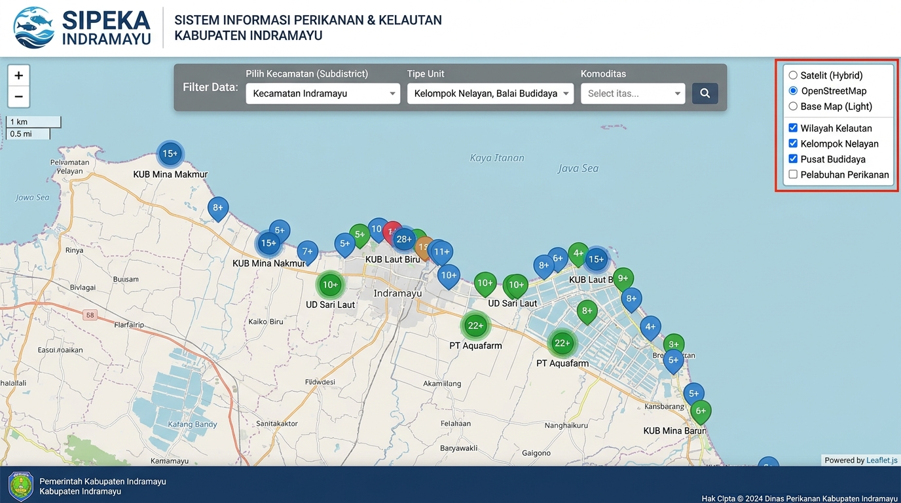
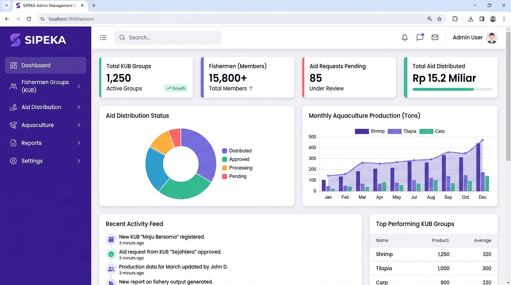
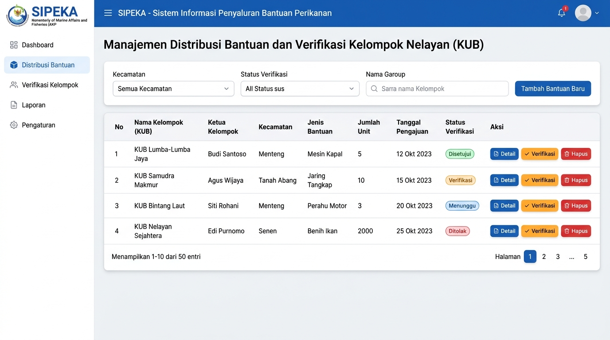

SIPEKA Indramayu
Sistem Informasi Perikanan & Kelautan Terpadu serta Pemetaan Spasial Bantuan Nelayan Kabupaten Indramayu
Ringkasan Proyek
SIPEKA (Sistem Informasi Perikanan dan Kelautan) adalah aplikasi web terpadu yang dirancang untuk Dinas Perikanan dan Kelautan Pemerintah Daerah Kabupaten Indramayu. Sistem ini mengintegrasikan pemetaan spasial geospasial (WebGIS) kelompok nelayan dan pembudidaya ikan, pemantauan distribusi program bantuan sarana/prasarana perikanan, serta tata kelola data verifikasi usulan secara digital, transparan, dan terukur.
Tangkapan Layar Sistem (System Preview)

Peta Sebaran WebGIS
Visualisasi spasial sebaran kelompok nelayan dan kawasan budidaya pesisir Indramayu.

Dashboard Analitik
Statistik total kelompok, rekapitulasi bantuan, dan metrik produksi bulanan.

Penyaluran Bantuan
Tabel verifikasi usulan paket bantuan, approval berjenjang, dan pelacakan status.
Fitur-Fitur Utama (Key Features)
WebGIS Pemetaan Multi-Kategori
Peta interaktif berbasis Leaflet dengan marker clustering, filter per kecamatan, serta visualisasi zona perikanan tangkap dan tambak budidaya.
Tata Kelola Bantuan Perikanan
Pencatatan komprehensif alokasi bantuan alat tangkap, mesin kapal, dan benih ikan beserta riwayat penerima dan status verifikasi lapangan.
Otentikasi & RBAC Shield
Keamanan akses berjenjang menggunakan CodeIgniter Shield untuk Superadmin, Operator Bidang Perikanan, dan hak akses tampilan publik.
Rekapitulasi Data & Laporan Dinas
Agregasi otomatis jumlah kelompok aktif, anggota terdaftar, komoditas unggulan, dan ekspor data administratif dinas.
Teknologi & Arsitektur Sistem
| Komponen | Teknologi | Peran & Implementasi |
|---|---|---|
| WebGIS & Spasial | Leaflet.js, MarkerCluster, GeoJSON | Visualisasi titik sebaran kelompok nelayan, kontrol layer hybrid/OSM, filter kecamatan, dan clustering marker. |
| Backend Framework | PHP / CodeIgniter 4 (CI4) | Arsitektur MVC performa tinggi, endpoint API data spasial, modul CRUD bantuan, dan validasi form server-side. |
| Security & Auth | CodeIgniter Shield | Role-Based Access Control (RBAC), password hashing Argon2id, session protection, dan throttling keamanan. |
| Database Engine | MySQL Database | Relasi master kelompok, anggota, usulan bantuan perikanan, koordinat geografis, serta log verifikasi data. |